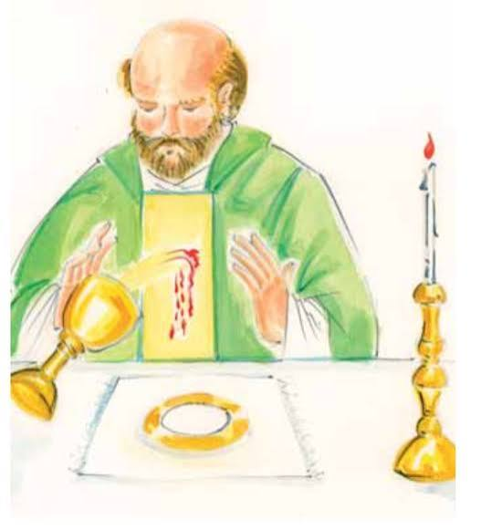
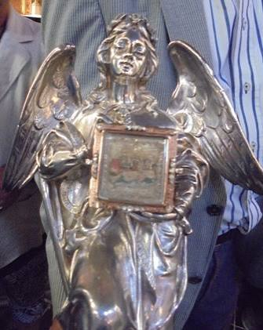

On May 1, 1429, a newly ordained priest named Folkert accidentally knocked over a chalice containing consecrated wine during his first Mass at the Cathedral of Saint Lawrence in Alkmaar, Netherlands. The spilled wine transformed into visible, living blood, which soaked into the altar and the priest's chasuble.
Location: The miracle occurred at the Grote of Sint-Laurenskerk (Great or St. Lawrence Church) located in the historic center of Alkmaar, Netherlands.
Current Status: The cathedral is open to visitors. Today, the space acts as a multi-purpose cultural center and event space while still housing its historic religious artifacts.